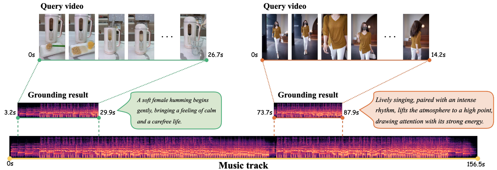

Music grounding by short video (MGSV), aiming to localize within a music-track collection a
music moment that best serves as background music for the query video. Text in callout
boxes to the right of each music moment is for illustrative purposes only.
TL;DR
This paper introduces Music Grounding by Short Video (MGSV), a new task that aims to localize
background music segments suitable for short videos, supported by a large-scale real-world
benchmark, and proposes a unified baseline model that jointly performs music matching and moment
localization.
BGM Showcase Generated by our Model
MaDe
Abstract
Adding proper background music helps complete a short video to be shared. Previous work
tackles the task by video-to-music retrieval (V2MR), aiming to find the most suitable music
track from a collection to match the content of a given query video. In practice, however,
music tracks are typically much longer than the query video, necessitating
(manual) trimming of the retrieved music to a shorter segment that matches the video
duration. In order to bridge the gap between the practical need for music moment
localization and V2MR, we propose a new task
termed Music Grounding by Short Video (MGSV). To tackle the new
task, we introduce a new benchmark, MGSV-EC, which comprises a diverse set of 53k
short videos associated with 35k different music moments from 4k unique music tracks.
Furthermore, we develop a new baseline method, MaDe, which performs both video-to-music
matching and music moment detection within a unified
end-to-end deep network. Extensive experiments on MGSV-EC not only highlight the challenging
nature of MGSV but also set MaDe as a strong baseline.
Dataset for MGSV: MGSV-EC
In order to develop and evaluate solutions for the new MGSV task, we build MGSV-EC,
a dataset consisting of 53k professionally made E-commerce videos, with their BGMs extracted from a
set of 4k
unique music tracks.
Dataset Curation
We preserve 53,194 short videos accompanied with 35,393 different music moments from 4,050 unique
music tracks. Among the tracks, songs and instrumental music are approximately in a 6:4 ratio.
The video duration is 23.9 seconds on average, whilst that
of the music tracks is 138.9 seconds, indicating a noticeable
duration gap between the query videos and the music tracks
to be retrieved.
Visualization of MGSV-EC.
Note that the video tag cloud is merely to demonstrate the richness of the visual
content.
For reproducible research, we recommend a data split as follows. A set of 2k videos is randomly
sampled to form a held-out test set, while another random set of 2k videos is used as a validation
set (for hyper-parameter tuning, model selection, etc.), with the remaining data used for training.
Overview of the MGSV-EC dataset.
While the query videos have no overlap between
train / val. / test, music tracks are partially shared across the data split. As the music
tracks are meant for re-using, such a setup is practical.
Evaluation Protocol
Our benchmark supports two evaluation modes, i.e.single-music,
wherein the music track relevant w.r.t. to a given query video is known in advance, and
music-set, wherein the relevant music track has to be retrieved from a given
music track set.
Evaluation modes, (sub-)tasks and metrics.
A Strong Baseline for MGSV: MaDe
The overall structure of our network is illustrated below.
Conceptually, MaDe consists of three modules:
Multimodal Embedding that converts the given query video and music track to a
sequence of visual and audio tokens, respectively.
It consists of two steps, Raw Feature
Extraction and Unimodal Feature
Enhancement.
Video-Music Matching which
estimates the relevance of the music track w.r.t. the video based on their holistic
embeddings.
Music Moment Detection that
localizes within the music track the moment best fitting the video.
Conceptual diagram of the proposed MaDe network for MGSV.
At a high level, given a query video \(v\) and a music track \(M\) as multi-modal input, MaDe yields a
three-dimensional output \((p_s, p_c, p_w)\), where \(p_s\) measures the relevance of \(M\)
w.r.t. \(v\), whilst \(p_c\) / \(p_w\) indicates the center / width of the detected music
moment. The video is initially represented by a sequence of \(F\) evenly sampled frames, and the music
track as a sequence of \(S\) partially overlapped Mel-spectrogram segments. Pre-trained CLIP
(ViT-B/32) and Audio Spectrogram Transformer (AST) are used as our (weight-frozen) video and audio
encoders, respectively. Each encoder is followed by an FC layer to compress frame / audio embeddings to
a smaller size of \(d\)(=256) for cross-modal feature alignment and for parameter reduction.
In the single-music mode where \(M\) is known to be relevant w.r.t. \(v\), \(p_s\)
will be ignored.
In the music-set mode, we rank all candidate music tracks by their \(p_s\) and accordingly
select the moment detected from the top-ranked music track as the grounding result.
Evaluation
Grounding Results
For a fair and reproducible comparison in single-music grounding (SmG) task, we opt for SOTA video
temporal grounding models that are DETR-based and open-source.
To tackle the MsG task, a straightforward solution is to combine UVCOM+ with an existing V2MR
model, like MVPt.
Overall results.
#Params excludes the (weights-frozen) video / audio encoders.
We further conduct a human evaluation on a random subset of 100 test videos to subjectively
assess the quality of the MsG results.
Human evaluation results.
Generated BGM Comparisons
Original background music
BGM generated by MaDe(ours)
Composite solution
Ablation Study
For a better understanding of the superior performance of MaDe, an ablation study is conducted
as
follows.
Ablation study of MaDe.
We conduct a controlled comparison at varied training data scales.
This result suggests that CA-based multimodal feature fusion is the
source of incompatibility with the MGSV task’s demands.
@inproceedings{xin2025mgsv,
title={Music Grounding by Short Video},
author={Xin, Zijie and Wang, Minquan and Liu, Jingyu and Chen, Quan and Ma, Ye and Jiang, Peng and Li, Xirong},
booktitle={Proceedings of the IEEE/CVF International Conference on Computer Vision},
year={2025}
}
Acknowledgements
This research was supported by NSFC (No.62172420) and Kuaishou. We thank Yingtong Liu, Yuchuan Deng, Yiyi
Chen, and Bo Wang for valuable discussion and feedback on this research.